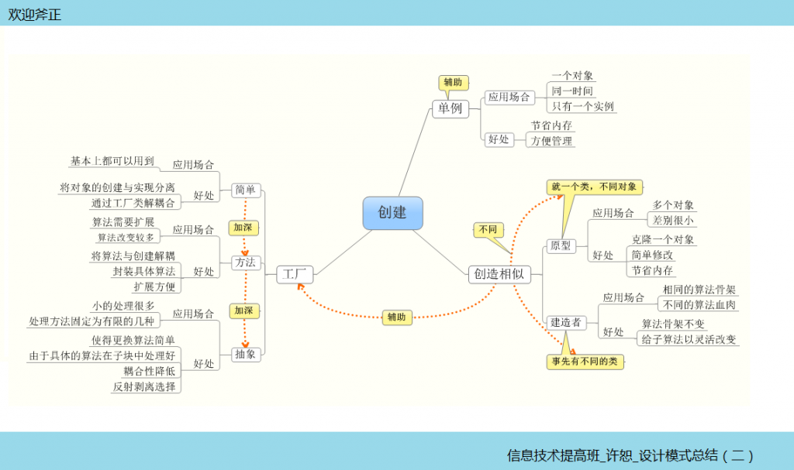

面向对象设计，一个必不可少的步骤是“实例化”，如果将实例化与具体的实现紧密地结合在一起……简单的创建，当然这是没有问题的，但是，如果我们不是简单的创建呢，我们需要改变具体的算法，需要扩展算法的种类，需要系统在改变之后还是以前的样子运行！那么，问题就会变得复杂，多变！
在创建型的几个设计模式中，将具体算法的实现与实例化分离，工厂方法是这方面的典范，其他的创建型设计模式起到扩展和辅助的作用！

在书中举得那些例子，都很有趣，大家可以好好看看，在这里咱们说说一些扩展的知识。
反射：我个人肤浅的理解是，应用程序在运行时，可以动态地获得一个类型的属性，方法，事件等信息，这样就可以在工厂中动态地创建一个对象了！
c#代码：
Assembly.Load("程序集") //Assembly.LoadFile("外部调用的动态库")加载程序集,返回类型是一个Assembly
实际应用：
//引入反射
using System.Reflection;
//引入config配置文件
using System.Configuration ;
//反射优化抽象工厂
//根据配置文件选择创建查询方式
class DateAccess
{
private static readonly string AssemblyName = "shujuku";
//利用配置文件:1,添加引用system.configuration ; 2, using system.configuration
//读取配置文件app.config里的DB
private static readonly string db = ConfigurationManager.AppSettings["DB"];
//private static readonly string db = "Sqlserver";
//静态函数创建用户表
public static IUser CreateUser()
{
string classname = AssemblyName + "." + db + "User";
//利用反射创建对象
return (IUser)Assembly.Load(AssemblyName).CreateInstance(classname);
}
//静态函数创建表
public static IDepartment CreateDepartment()
{
string classname = AssemblyName + "." + db + "Department";
//利用反射创建对象
return (IDepartment )Assembly.Load(AssemblyName).CreateInstance(classname);
}
}
在程序设计中，创建型模式已经给我们带来了意想不到的好处，让我们的工作更轻松，简单，但是不要忘了一种模式只是解决一种特定的问题，下次我们将介绍更多的模式，解决更多的问题！